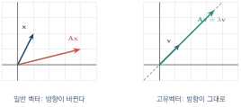
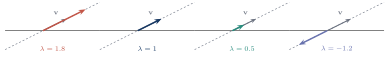
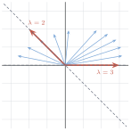
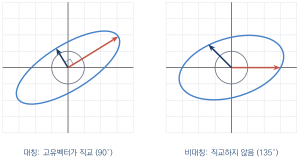
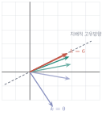

고유값과 고유벡터
이 장을 마치면
np.linalg.eig의 출력을 해석할 수 있다.
7장에서 행렬을 "공간을 변형하는 장치"로 보았다. 격자가 기울어지고, 도형이 늘어나고, 방향이 뒤집힌다. 이 혼란 속에서 다음과 같은 질문을 던져 보자.
이 변환을 겪고도 방향이 변하지 않는 벡터가 있을까? 있다면 그 벡터는 얼마나 늘어나거나 줄어들까?
이 질문의 답이 고유벡터와 고유값이다. 언뜻 사소한 질문처럼 보이지만, 이 답을 알면 그 변환의 정체를 거의 완전히 파악할 수 있다. 변환을 여러 번 반복했을 때 어디로 수렴하는지, 데이터가 어느 방향으로 가장 많이 퍼져 있는지, 진동하는 시스템이 안정한지 불안정한지가 모두 고유값으로 결정된다.
9.1 고유벡터의 정의
방향이 바뀌지 않는 벡터
정방행렬 \(\mm{A} \in \Rmat{n}{n}\)에 대하여
식 \(\eqref{eq:ch09_eigen}\)의 왼쪽은 벡터에 행렬을 곱하는 변환이고, 오른쪽은 벡터에 숫자를 곱하는 크기 조절이다. 이 둘이 같다는 것은, 그 벡터에 한해서 복잡한 변환이 단순한 배율로 줄어든다는 뜻이다.

eigen은 독일어에서 온 말로 "고유의", "자기 자신의"라는 뜻이다. eigenvalue는 원래 독일어 Eigenwert("고유한 값")를 영어권에서 절반만 번역해 쓴 말이다. 그 행렬만이 가진 고유한 특성을 나타내는 값이라는 의미를 담고 있다.
고유값의 부호와 크기가 말해 주는 것
\(\lambda\)의 값에 따라 고유벡터가 어떻게 변하는지 정리해 두자.
| 고유값 | 고유벡터에 일어나는 일 |
|---|---|
| \(\lambda > 1\) | 같은 방향으로 늘어난다 |
| \(\lambda = 1\) | 전혀 변하지 않는다 (고정된 방향) |
| \(0 < \lambda < 1\) | 같은 방향으로 줄어든다 |
| \(\lambda = 0\) | 원점으로 눌린다 (영공간에 속한다) |
| \(-1 < \lambda < 0\) | 반대 방향으로 뒤집히며 줄어든다 |
| \(\lambda \leq -1\) | 반대 방향으로 뒤집히며 늘어난다 |
\(\lambda = 0\)인 경우가 눈에 띈다. \(\mm{A}\vv{v} = \zerovec\)이라는 뜻이므로 \(\vv{v}\)는 영공간의 원소다. 6장에서 배운 "고유값 중 0이 없으면 가역"이라는 조건이 여기서 설명된다. 고유값 0이 있다는 것은 눌려 사라지는 방향이 있다는 뜻이다.

고유벡터는 하나가 아니다
식 \(\eqref{eq:ch09_eigen}\)에서 \(\vv{v}\)가 고유벡터이면 \(c\vv{v}\)(\(c \neq 0\))도 고유벡터다.
따라서 고유벡터는 방향(직선)으로 정해지지 크기로 정해지지 않는다. 그래서 대부분의 라이브러리는 크기가 1이 되도록 정규화한 고유벡터를 돌려준다.
같은 고유값에 대한 고유벡터를 두 사람이 구했는데 부호가 반대이거나 크기가 다를 수 있다. 둘 다 정답이다. 넘파이가 돌려주는 고유벡터의 부호도 실행 환경에 따라 달라질 수 있으므로, 부호에 의존하는 코드를 작성하면 안 된다.
눈으로 고유벡터 찾기
정의만 알면 고유벡터를 그림으로 찾아낼 수 있다. 여러 방향의 벡터를 모두 변환해 놓고, 원래 방향과 겹치는 것을 고르면 된다.
import numpy as np
import matplotlib.pyplot as plt
from lautils import *
A = np.array([[3., 1.],
[0., 2.]])
t = np.linspace(0, np.pi, 24, endpoint=False) # 방향 24개
V = np.column_stack([np.cos(t), np.sin(t)]) # 단위벡터들
W = transform(A, V) # 변환 결과
# 방향이 유지되는지: 원래 방향과 변환 결과의 각도 차이
cos = np.abs((V * W).sum(axis=1) /
(np.linalg.norm(V, axis=1) * np.linalg.norm(W, axis=1)))
fig, ax = new_axes(xlim=(-4, 4), ylim=(-4, 4), figsize=(5.5, 5.5))
for v, w, c in zip(V, W, cos):
aligned = c > 0.999 # 거의 같은 방향인가
draw_vector(ax, 2 * v, color='lightgray', width=0.006)
draw_vector(ax, w, color=('crimson' if aligned else 'steelblue'),
width=(0.014 if aligned else 0.006))
ax.set_title('red = direction preserved')
plt.show()
print('가장 잘 정렬된 방향 :', np.round(V[np.argmax(cos)], 4))
그림 9.3에서 파란 화살표들은 방향이 모두 바뀌었지만, 붉은 두 방향만은 원래의 직선(점선) 위에 그대로 남아 있다. 이 둘이 고유벡터다. 그리고 각각 3배, 2배로 늘어났으므로 고유값은 3과 2다.
고유벡터를 찾는다는 것은 "변환의 축"을 찾는 일이다. 그 축 위에서 변환은 단순한 곱셈으로 줄어들고, 그것이 이후 모든 계산을 쉽게 만든다(10장의 대각화).
9.2 고유값 구하기: 특성방정식
식을 다시 정리하기
\(\mm{A}\vv{v} = \lambda\vv{v}\)에서 \(\lambda\)와 \(\vv{v}\)를 어떻게 구할까? 두 미지수가 곱해져 있어 곧바로 풀리지 않는다. 우변을 왼쪽으로 옮겨 정리해 보자.
여기서 \(\lambda\vv{v} = \lambda\Id\vv{v}\)임을 이용하면 \(\vv{v}\)로 묶을 수 있다.
\(\mm{A} - \lambda\)라고 쓰면 안 된다. 행렬에서 스칼라를 뺄 수는 없기 때문이다. 반드시 \(\lambda\Id\)처럼 단위행렬을 곱해 크기를 맞춰야 한다. 손으로 계산할 때 대각성분에서만 \(\lambda\)를 빼는 이유가 이것이다.
식 \(\eqref{eq:ch09_homog}\)은 \(\mm{B}\vv{v} = \zerovec\) 꼴이다. 그런데 고유벡터는 정의상 \(\vv{v} \neq \zerovec\)이어야 한다. 8장에서 배웠듯, 이런 영이 아닌 해가 존재하려면 \(\mm{B} = \mm{A}-\lambda\Id\)가 특이행렬이어야 한다. 그리고 특이행렬은 행렬식이 0이다.
\(\lambda\)가 \(\mm{A}\)의 고유값일 필요충분조건은
\(n\times n\) 행렬의 특성다항식은 \(\lambda\)에 대한 \(n\)차 다항식이다. 따라서 \(n\times n\) 행렬은 (중복을 세면) 정확히 \(n\)개의 고유값을 가진다. 다만 그중 일부는 복소수일 수 있다.
\(2\times2\)의 경우
\(\mm{A} = \mtwo{a}{b}{c}{d}\)에 대해 특성방정식을 세워 보자.
여기서 \(a+d\)는 대각성분의 합, 즉 대각합trace이고 \(ad-bc\)는 행렬식이다. 따라서
\(2\times2\) 행렬의 특성방정식은 언제나 다음 꼴이다.
이 관계는 계산 결과를 검산하는 데 매우 유용하다. 그리고 \(n \times n\)에서도 그대로 성립한다(모든 고유값의 합 \(=\) 대각합, 곱 \(=\) 행렬식).
\(\mm{A} = \mtwo{3}{1}{0}{2}\)의 고유값과 고유벡터를 구하시오.
② \(\lambda=3\)의 고유벡터: \((\mm{A}-3\Id)\vv{v} = \zerovec\)을 푼다.
③ \(\lambda=2\)의 고유벡터: \((\mm{A}-2\Id)\vv{v} = \zerovec\)을 푼다.
import numpy as np
A = np.array([[3., 1.],
[0., 2.]])
w, V = np.linalg.eig(A)
print('고유값 :', w)
print('고유벡터 (열):\n', np.round(V, 6))
# 검산: A v = lambda v 인가?
for k in range(2):
print(f'lambda={w[k]:.1f} : ',
np.allclose(A @ V[:, k], w[k] * V[:, k]))
print('합 == trace :', np.isclose(w.sum(), np.trace(A)))
print('곱 == det :', np.isclose(w.prod(), np.linalg.det(A)))고유값 : [3. 2.] 고유벡터 (열): [[ 1. -0.707107] [ 0. 0.707107]] lambda=3.0 : True lambda=2.0 : True 합 == trace : True 곱 == det : True
np.linalg.eig로 고유값과 고유벡터 구하기np.linalg.eig가 돌려주는 고유벡터는 열에 담겨 있다. V[:, k]가 w[k]에 대응하는 고유벡터다. V[k](행)로 착각하는 실수가 매우 흔하다. 또 결과는 크기가 1이 되도록 정규화되어 있어, 손으로 구한 \((1,-1)\)이 \((-0.707, 0.707)\)처럼 보일 수 있다. 둘은 같은 방향이므로 모두 정답이다.
\(3\times3\)의 경우
\(3\times3\)이면 특성다항식이 3차식이 되어 손으로 풀기가 까다로워진다. 그래도 근이 정수인 문제라면 인수분해로 풀 수 있다.
\(\mm{A} = \begin{bmatrix} 2&0&0 \\ 1&3&0 \\ -1&2&4 \end{bmatrix}\)의 고유값을 구하시오.
import numpy as np
A = np.array([[2., 0., 0.],
[1., 3., 0.],
[-1., 2., 4.]])
w, V = np.linalg.eig(A)
print('고유값 :', np.sort(w))
# 특성다항식의 계수 (넘파이가 직접 제공)
print('특성다항식 계수 :', np.round(np.poly(A), 6))
print(' -> lambda^3 - 9 lambda^2 + 26 lambda - 24')고유값 : [2. 3. 4.] 특성다항식 계수 : [ 1. -9. 26. -24.] -> lambda^3 - 9 lambda^2 + 26 lambda - 24
복소수 고유값
모든 행렬이 실수 고유값을 갖는 것은 아니다. 회전행렬을 생각해 보자. 회전은 어떤 벡터의 방향도 유지하지 않는다. 따라서 실수 고유값이 있을 수 없다.
import numpy as np
t = np.radians(60)
R = np.array([[np.cos(t), -np.sin(t)],
[np.sin(t), np.cos(t)]])
w, V = np.linalg.eig(R)
print('회전행렬의 고유값 :', np.round(w, 4))
print('절댓값 :', np.round(np.abs(w), 6))
print('편각(도) :', np.round(np.degrees(np.angle(w)), 4))회전행렬의 고유값 : [0.5+0.866j 0.5-0.866j] 절댓값 : [1. 1.] 편각(도) : [ 60. -60.]
복소수 고유값이 나왔지만 이것도 의미가 있다. 절댓값 1은 크기가 변하지 않음을, 편각 \(60^\circ\)는 회전 각도를 그대로 알려 준다. 복소수 고유값은 "회전이 섞여 있다"는 신호이며, 진동하는 시스템을 다룰 때 자연스럽게 등장한다.
\(n\)이 조금만 커져도 특성방정식을 세워 푸는 방법은 쓸 수 없다. 5차 이상의 다항식은 근의 공식이 존재하지 않는다는 것이 증명되어 있고(아벨–루피니 정리), 수치적으로도 다항식의 근을 구하는 것은 오차에 극도로 민감하다.
그래서 실제 알고리즘은 전혀 다른 방법을 쓴다. 대표적인 것이 QR 알고리즘으로, 행렬을 \(\mm{Q}\mm{R}\)로 분해한 뒤 순서를 바꿔 \(\mm{R}\mm{Q}\)를 만드는 과정을 반복한다. 놀랍게도 이 과정을 반복하면 행렬이 점점 삼각행렬에 가까워지고, 대각성분이 고유값으로 수렴한다. 12장에서 QR 분해를 배운 뒤 이 알고리즘을 직접 구현해 볼 것이다.
즉 특성방정식은 고유값이 무엇인지 정의하고 이해하기 위한 도구이지 계산 도구가 아니다.
9.3 특별한 행렬의 고유값
삼각행렬 — 대각선을 읽으면 끝
상삼각행렬 또는 하삼각행렬(대각행렬 포함)의 고유값은 대각성분 그 자체다.
증명은 간단하다. \(\mm{A}\)가 삼각행렬이면 \(\mm{A}-\lambda\Id\)도 삼각행렬이고, 삼각행렬의 행렬식은 대각성분의 곱이므로
이 되어 근이 곧 대각성분이다.
import numpy as np
U = np.array([[5., 2., 1., 8.],
[0., -3., 4., 2.],
[0., 0., 7., 1.],
[0., 0., 0., 2.]])
print('대각성분 :', np.diag(U))
print('고유값 :', np.sort(np.linalg.eig(U)[0]))대각성분 : [ 5. -3. 7. 2.] 고유값 : [-3. 2. 5. 7.]
이 사실은 8장에서 배운 소거법과 묘하게 어긋난다. 소거법으로 어떤 행렬을 삼각행렬로 바꿀 수 있다면, 대각선만 읽어서 고유값을 알 수 있는 것 아닐까?
그렇지 않다. 기본행연산은 행렬식은 (부호를 제외하고) 보존하지만 고유값은 보존하지 않는다. 소거로 얻은 \(\mm{U}\)의 고유값은 원래 \(\mm{A}\)의 고유값과 전혀 다르다. 고유값을 보존하는 변환은 닮음변환 \(\mm{P}\inv\mm{A}\mm{P}\)이며, 10장에서 다룬다.
A = np.array([[4., 1.], [2., 3.]])
U = np.array([[4., 1.], [0., 2.5]]) # A를 소거한 결과
print(np.sort(np.linalg.eig(A)[0])) # [2. 5.]
print(np.sort(np.linalg.eig(U)[0])) # [2.5 4. ] — 다르다!대칭행렬 — 가장 좋은 행렬
실수 성분의 대칭행렬(\(\mm{A}\tp = \mm{A}\))은 고유값 문제에서 가장 다루기 좋은 행렬이다.
실대칭행렬 \(\mm{A}\)에 대하여
- 모든 고유값이 실수다 (복소수가 나오지 않는다).
- 서로 다른 고유값에 대응하는 고유벡터는 서로 직교한다.
- 고유벡터로 이루어진 정규직교기저를 항상 만들 수 있다.
(2)의 증명은 짧고 아름답다. \(\mm{A}\vv{u} = \lambda\vv{u}\), \(\mm{A}\vv{v} = \mu\vv{v}\)이고 \(\lambda \neq \mu\)라 하자.
세 번째 등호에서 대칭성 \(\mm{A}\tp = \mm{A}\)를 썼다. 결국 \((\lambda-\mu)(\vv{u}\cdot\vv{v}) = 0\)이고 \(\lambda \neq \mu\)이므로 \(\vv{u}\cdot\vv{v} = 0\), 즉 두 고유벡터는 직교한다.
import numpy as np
rng = np.random.default_rng(42)
M = rng.normal(0, 1, (4, 4))
S = (M + M.T) / 2 # 대칭행렬 만들기
w, V = np.linalg.eigh(S) # 대칭행렬 전용 함수
print('고유값 (모두 실수):', np.round(w, 4))
print('고유벡터가 직교하는가:')
print(np.round(V.T @ V, 10)) # 단위행렬이어야 한다고유값 (모두 실수): [-2.4667 -0.792 0.592 1.6894] 고유벡터가 직교하는가: [[ 1. 0. -0. -0.] [ 0. 1. 0. -0.] [-0. 0. 1. -0.] [-0. -0. -0. 1.]]
대칭행렬에는 np.linalg.eigh를 쓰자(h는 에르미트를 뜻한다). 대칭성을 이용하므로 eig보다 빠르고, 결과가 반드시 실수이며, 고유값이 오름차순으로 정렬되어 나온다. 공분산행렬(11장), 그람행렬, 라플라시안 행렬은 모두 대칭이므로 실전에서 eigh를 쓸 일이 훨씬 많다.
대칭행렬을 눈으로 보기
대칭행렬의 고유벡터가 직교한다는 사실은 그림으로 보면 인상적이다. 원 위의 벡터들을 변환하면 타원이 되는데, 그 타원의 장축과 단축이 정확히 고유벡터 방향이다.
import numpy as np
import matplotlib.pyplot as plt
from lautils import *
S = np.array([[3., 1.],
[1., 2.]]) # 대칭
N = np.array([[3., 1.],
[0., 2.]]) # 비대칭
fig, axes = plt.subplots(1, 2, figsize=(9.5, 4.8))
t = np.linspace(0, 2 * np.pi, 200)
circle = np.column_stack([np.cos(t), np.sin(t)])
for ax, A, title in [(axes[0], S, 'symmetric'), (axes[1], N, 'not symmetric')]:
ax.set_xlim(-5, 5); ax.set_ylim(-5, 5)
ax.set_aspect('equal'); ax.grid(True, alpha=0.3)
ax.axhline(0, color='black', lw=0.6); ax.axvline(0, color='black', lw=0.6)
ax.plot(circle[:, 0], circle[:, 1], color='lightgray', lw=1)
E = transform(A, circle)
ax.plot(E[:, 0], E[:, 1], color='steelblue', lw=1.5)
w, V = np.linalg.eig(A)
for k in range(2):
draw_vector(ax, np.real(w[k]) * np.real(V[:, k]),
color=PALETTE[k], width=0.014)
angle = np.degrees(np.arccos(abs(V[:, 0] @ V[:, 1])))
ax.set_title(f'{title}: eigvec angle = {angle:.1f} deg', fontsize=10)
plt.tight_layout(); plt.show()
고유값에 관한 유용한 사실들
| 사실 | 설명 |
|---|---|
| \(\sum \lambda_i = \trace(\mm{A})\) | 고유값의 합은 대각합 |
| \(\prod \lambda_i = \det(\mm{A})\) | 고유값의 곱은 행렬식 |
| \(\mm{A}\)가 가역 \(\Leftrightarrow\) 모든 \(\lambda_i \neq 0\) | 0인 고유값이 있으면 차원 붕괴 |
| \(\mm{A}\inv\)의 고유값은 \(1/\lambda_i\) | 고유벡터는 그대로 |
| \(\mm{A}^k\)의 고유값은 \(\lambda_i^k\) | 10장의 핵심 |
| \(\mm{A}+c\Id\)의 고유값은 \(\lambda_i+c\) | 고유벡터는 그대로 |
| \(\mm{A}\tp\)의 고유값은 \(\mm{A}\)와 같다 | 고유벡터는 다를 수 있다 |
import numpy as np
rng = np.random.default_rng(7)
A = rng.normal(0, 1, (4, 4))
w = np.linalg.eig(A)[0]
print('sum(w) vs trace :', np.isclose(w.sum().real, np.trace(A)))
print('prod(w) vs det :', np.isclose(w.prod().real, np.linalg.det(A)))
print('A^3의 고유값 :',
np.allclose(np.sort_complex(np.linalg.eig(A @ A @ A)[0]),
np.sort_complex(w ** 3)))
print('A+2I의 고유값 :',
np.allclose(np.sort_complex(np.linalg.eig(A + 2 * np.eye(4))[0]),
np.sort_complex(w + 2)))
print('A.T의 고유값 :',
np.allclose(np.sort_complex(np.linalg.eig(A.T)[0]),
np.sort_complex(w)))sum(w) vs trace : True prod(w) vs det : True A^3의 고유값 : True A+2I의 고유값 : True A.T의 고유값 : True
표에서 \(\mm{A}^k\)의 고유값이 \(\lambda_i^k\)라는 사실이 특히 중요하다. 행렬을 거듭제곱한다는 것은 같은 변환을 반복 적용한다는 뜻인데, 그때 각 고유방향에서 일어나는 일은 단순히 \(\lambda\)를 거듭제곱하는 것뿐이다. 절댓값이 1보다 큰 고유값 방향은 폭발적으로 커지고, 1보다 작은 방향은 사라진다. 10장에서 이 성질로 마르코프 연쇄와 페이지랭크를 다룬다.
9.4 고유값과 고유벡터의 기하적 의미
변환을 반복하면 무슨 일이 벌어지는가
고유값의 진짜 위력은 변환을 반복할 때 드러난다. 임의의 벡터 \(\vv{x}\)를 고유벡터의 조합으로 적어 보자(고유벡터가 기저를 이룬다고 가정한다).
여기에 \(\mm{A}\)를 \(k\)번 적용하면
이 된다. 각 고유방향의 성분이 자기 고유값의 \(k\)제곱만큼 커지거나 작아지는 것이다.
\(\abs{\lambda_1} > \abs{\lambda_2}\)라면 \(k\)가 커질수록 첫째 항이 압도적으로 커진다. 결국 어떤 벡터에서 출발하든 \(\mm{A}^k\vv{x}\)의 방향은 가장 큰 고유값의 고유벡터 방향으로 수렴한다. 이것을 거듭제곱법power method이라 하며, 페이지랭크를 계산하는 알고리즘의 뼈대다.
import numpy as np
import matplotlib.pyplot as plt
from lautils import *
A = np.array([[1.4, 0.6],
[0.3, 1.1]])
w, V = np.linalg.eig(A)
print('고유값 :', np.round(w, 4))
print('가장 큰 고유값의 고유벡터 :', np.round(V[:, np.argmax(np.abs(w))], 4))
x = np.array([1., -1.5]) # 아무 벡터에서 출발
fig, ax = new_axes(xlim=(-2, 5), ylim=(-2, 5), figsize=(5.5, 5.5))
# 지배적인 고유벡터 방향을 점선으로
v_dom = np.real(V[:, np.argmax(np.abs(w))])
s = np.linspace(-3, 5, 10)
ax.plot(s * v_dom[0], s * v_dom[1], color='gray', ls='--', lw=1.2)
for k in range(7):
draw_vector(ax, x / np.linalg.norm(x) * 3, # 방향만 보기 위해 길이 고정
color=plt.cm.viridis(k / 6), width=0.010)
x = A @ x
plt.show()고유값 : [1.7 0.8] 가장 큰 고유값의 고유벡터 : [0.8944 0.4472]

거듭제곱법 직접 구현하기
식 \(\eqref{eq:ch09_power}\)의 원리를 그대로 코드로 옮기면 가장 큰 고유값과 그 고유벡터를 구하는 알고리즘이 된다. 매 단계에서 길이를 1로 정규화하는 것만 잊지 않으면 된다.
import numpy as np
def power_method(A, iters=100, tol=1e-12, seed=0):
"""가장 큰 고유값과 그 고유벡터를 반복법으로 구한다."""
rng = np.random.default_rng(seed)
v = rng.normal(0, 1, A.shape[0])
v /= np.linalg.norm(v)
lam_old = 0.0
for k in range(iters):
w = A @ v
v = w / np.linalg.norm(w) # 정규화 (발산 방지)
lam = v @ A @ v # 레일리 몫
if abs(lam - lam_old) < tol:
return lam, v, k + 1
lam_old = lam
return lam, v, iters
A = np.array([[1.4, 0.6],
[0.3, 1.1]])
lam, v, k = power_method(A)
print(f'{k}회 반복 후')
print('추정 고유값 :', round(lam, 10))
print('추정 고유벡터 :', np.round(v, 6))
print('넘파이 결과 :', np.linalg.eig(A)[0])40회 반복 후 추정 고유값 : 1.7 추정 고유벡터 : [-0.894427 -0.447214] 넘파이 결과 : [1.7 0.8]
행렬 곱만 반복해서 고유값을 얻었다. 특성방정식은 세우지도 않았다. 이것이 대규모 문제에서 실제로 쓰이는 접근이며, 구글의 페이지랭크도 이 방법으로 수십억 개 노드의 고유벡터를 구한다.
코드의 v @ A @ v는 \(\vv{v}\tp\mm{A}\vv{v}\)로, 단위벡터 \(\vv{v}\)에 대한 레일리 몫Rayleigh quotient이다. \(\vv{v}\)가 정확한 고유벡터이면 이 값이 정확히 고유값이 되고, 근처에 있으면 좋은 근사값이 된다. 게다가 \(\vv{v}\)의 오차가 \(\epsilon\)일 때 레일리 몫의 오차는 \(\epsilon^2\) 수준이라 매우 정확하다.
고유값이 말해 주는 시스템의 운명
\(\vv{x}_{k+1} = \mm{A}\vv{x}_k\)로 진화하는 시스템을 생각해 보자. 시간이 흐르면 어떻게 될까? 답은 고유값의 절댓값이 결정한다.
| 조건 | 시스템의 장기 거동 |
|---|---|
| 모든 \(\abs{\lambda_i} < 1\) | 원점으로 수렴한다 (안정) |
| 어떤 \(\abs{\lambda_i} > 1\) | 그 방향으로 발산한다 (불안정) |
| 가장 큰 \(\abs{\lambda_i} = 1\) | 특정 상태로 수렴한다 (정상상태) |
| 복소수 고유값 | 회전하며 진동한다 |
import numpy as np
import matplotlib.pyplot as plt
from lautils import *
cases = {
'stable (|w|<1)' : np.array([[0.7, 0.2], [0.1, 0.6]]),
'unstable (|w|>1)' : np.array([[1.3, 0.2], [0.1, 1.1]]),
'rotation' : np.array([[0.95, -0.5], [0.5, 0.95]]),
}
fig, axes = plt.subplots(1, 3, figsize=(12, 4))
for ax, (name, A) in zip(axes, cases.items()):
ax.set_xlim(-3, 3); ax.set_ylim(-3, 3)
ax.set_aspect('equal'); ax.grid(True, alpha=0.3)
ax.axhline(0, color='black', lw=0.5); ax.axvline(0, color='black', lw=0.5)
for start in [np.array([2., 0.5]), np.array([-1.5, 2.])]:
traj = [start]
for _ in range(25):
traj.append(A @ traj[-1])
traj = np.array(traj)
ax.plot(traj[:, 0], traj[:, 1], 'o-', ms=3, lw=0.8)
w = np.linalg.eig(A)[0]
ax.set_title(f'{name}\n|w| = {np.round(np.abs(w), 3)}', fontsize=9)
plt.tight_layout(); plt.show()깊은 신경망을 학습시킬 때 오차를 뒤로 전파하면, 층을 거슬러 갈 때마다 가중치 행렬이 곱해진다. 층이 \(L\)개라면 대략 \(\mm{W}^L\)이 곱해지는 셈이다.
식 \(\eqref{eq:ch09_power}\)에 따르면 이때 각 방향의 크기는 \(\lambda^L\)로 변한다. 고유값의 절댓값이 1보다 작으면 기울기가 지수적으로 사라지고(기울기 소실), 1보다 크면 지수적으로 폭발한다(기울기 폭발). 순환 신경망(RNN)이 긴 문장을 학습하기 어려웠던 근본 원인이 바로 이것이다.
이를 완화하는 기법들 — 가중치 초기화를 특이값 기준으로 조정하기, 스펙트럼 정규화, 잔차 연결(ResNet) — 은 모두 "곱해지는 행렬의 고유값(또는 특이값)을 1 근처로 유지하자"는 아이디어에서 나왔다. 선형대수의 한 성질이 딥러닝 아키텍처 설계를 이끈 셈이다.
- \(\mm{A}^k\vv{x} = \sum_i c_i\lambda_i^k\vv{v}_i\) — 반복 적용은 각 고유방향에서 \(\lambda\)의 거듭제곱일 뿐이다.
- 그래서 반복하면 가장 큰 고유값의 방향이 살아남는다(거듭제곱법).
- 고유값의 절댓값이 시스템의 안정성을 결정한다. 1보다 작으면 수렴, 크면 발산.
- 이 원리가 페이지랭크, 마르코프 연쇄, 신경망의 기울기 소실·폭발을 모두 설명한다.
- 고유벡터를 눈으로 찾아보자. 원 위의 벡터 36개를 변환하고, 방향이 유지되는 것을 강조해 표시하시오.
import numpy as np import matplotlib.pyplot as plt from lautils import * A = np.array([[2., 1.], [1., 2.]]) t = np.linspace(0, np.pi, 36, endpoint=False) V = np.column_stack([np.cos(t), np.sin(t)]) W = transform(A, V) cos = np.abs((V * W).sum(axis=1) / (np.linalg.norm(V, axis=1) * np.linalg.norm(W, axis=1))) fig, ax = new_axes(xlim=(-4, 4), ylim=(-4, 4), figsize=(5.5, 5.5)) for v, w, c in zip(V, W, cos): ok = c > 0.9999 draw_vector(ax, w, color=('crimson' if ok else 'lightsteelblue'), width=(0.015 if ok else 0.005)) plt.show() print('고유값 :', np.linalg.eigh(A)[0])\(\mm{A}\)가 대칭이므로 두 고유방향은 정확히 직교한다. 붉은 화살표가 그 방향이다.
- 특성방정식을 손으로 풀고 확인하자. 여러 행렬에 대해 대각합과 행렬식으로 특성방정식을 세우고 근을 구한 뒤 넘파이와 비교하시오.
import numpy as np for A in [np.array([[4., 1.], [2., 3.]]), np.array([[0., -1.], [1., 0.]]), np.array([[2., 0.], [0., 2.]])]: tr, det = np.trace(A), np.linalg.det(A) disc = tr ** 2 - 4 * det # 판별식 print(f'A=\n{A}') print(f' lambda^2 - {tr:.1f} lambda + {det:.1f} = 0, 판별식={disc:.1f}') print(f' 넘파이 고유값: {np.round(np.linalg.eig(A)[0], 4)}\n')판별식이 음수인 경우(회전행렬) 고유값이 복소수가 된다는 것을 확인하자.
- 고유벡터를 손으로 구해 보자. \((\mm{A}-\lambda\Id)\vv{v}=\zerovec\)을 풀어 고유벡터를 구하고, 넘파이 결과와 방향이 같은지 확인하시오.
import numpy as np A = np.array([[4., 1.], [2., 3.]]) w, V = np.linalg.eig(A) for lam in w: B = A - lam * np.eye(2) print(f'lambda = {lam:.1f}, A - lambda I =\n{np.round(B, 4)}') print(f' rank = {np.linalg.matrix_rank(B)} (2보다 작아야 고유벡터가 존재)') print('\n넘파이 고유벡터 (열):\n', np.round(V, 4)) # 방향 확인: 손으로 구한 (1,1)과 (1,-2) for v_hand in [np.array([1., 1.]), np.array([1., -2.])]: for k in range(2): c = abs(v_hand @ V[:, k] / (np.linalg.norm(v_hand) * np.linalg.norm(V[:, k]))) if c > 0.999: print(f'{v_hand} 는 lambda={w[k]:.1f} 의 고유벡터') - 거듭제곱법을 구현하고 수렴을 관찰하자. 반복 횟수에 따라 추정값이 참값에 다가가는 과정을 그래프로 그리시오.
import numpy as np import matplotlib.pyplot as plt A = np.array([[3., 1., 0.], [1., 3., 1.], [0., 1., 3.]]) true_lam = np.linalg.eigh(A)[0].max() rng = np.random.default_rng(0) v = rng.normal(0, 1, 3); v /= np.linalg.norm(v) errors = [] for k in range(30): v = A @ v v /= np.linalg.norm(v) errors.append(abs(v @ A @ v - true_lam)) plt.figure(figsize=(5.5, 3.8)) plt.semilogy(errors, 'o-', ms=4) plt.xlabel('iteration'); plt.ylabel('|error|') plt.grid(True, alpha=0.3); plt.title('power method convergence') plt.show() print('참값 :', true_lam) print('추정값 :', v @ A @ v)로그 눈금에서 직선으로 떨어진다. 오차가 \(\abs{\lambda_2/\lambda_1}^k\) 비율로 줄어들기 때문이며, 두 고유값의 차이가 클수록 빨리 수렴한다.
- 시스템의 장기 거동을 관찰하자. 인구 이동 모델을 만들고 오랜 시간 뒤의 분포를 구하시오.
import numpy as np import matplotlib.pyplot as plt # 도시 A, B 사이의 연간 인구 이동 행렬 (열의 합이 1) M = np.array([[0.9, 0.2], [0.1, 0.8]]) x = np.array([1000., 0.]) # 처음에는 모두 A에 있음 history = [x] for _ in range(40): x = M @ x history.append(x) history = np.array(history) plt.figure(figsize=(6, 3.8)) plt.plot(history[:, 0], label='city A') plt.plot(history[:, 1], label='city B') plt.xlabel('year'); plt.ylabel('population') plt.legend(); plt.grid(True, alpha=0.3) plt.show() w, V = np.linalg.eig(M) print('고유값 :', np.round(w, 6)) idx = np.argmax(w) steady = V[:, idx] / V[:, idx].sum() * 1000 print('정상상태 (고유벡터로 계산) :', np.round(steady, 2)) print('40년 후 실제 :', np.round(history[-1], 2))고유값 : [1. 0.7] 정상상태 (고유벡터로 계산) : [666.67 333.33] 40년 후 실제 : [666.67 333.33]
고유값 1에 대응하는 고유벡터가 곧 정상상태다. 시뮬레이션을 40번 돌린 결과와 고유벡터로 한 번에 구한 결과가 정확히 일치한다.
- 대칭행렬의 직교성을 확인하자. 무작위 대칭행렬 10개를 만들어 고유벡터들이 모두 직교하는지 검사하시오.
import numpy as np rng = np.random.default_rng(1) for k in range(5): M = rng.normal(0, 1, (5, 5)) S = (M + M.T) / 2 w, V = np.linalg.eigh(S) err = np.abs(V.T @ V - np.eye(5)).max() print(f'{k}: 실수 고유값 {np.iscomplexobj(w) == False}, ' f'직교 오차 {err:.2e}') - 고유값의 성질을 확인하자. \(\mm{A}\), \(\mm{A}^2\), \(\mm{A}\inv\), \(\mm{A}+3\Id\)의 고유값 관계를 검증하시오.
import numpy as np rng = np.random.default_rng(3) A = rng.normal(0, 1, (4, 4)) w = np.sort_complex(np.linalg.eig(A)[0]) tests = { 'A^2' : (np.linalg.matrix_power(A, 2), w ** 2), 'inv(A)' : (np.linalg.inv(A), 1 / w), 'A+3I' : (A + 3 * np.eye(4), w + 3), 'A.T' : (A.T, w), } for name, (M, expected) in tests.items(): got = np.sort_complex(np.linalg.eig(M)[0]) print(f'{name:8s}: {np.allclose(got, np.sort_complex(expected))}')
9장 요약
- \(\mm{A}\vv{v} = \lambda\vv{v}\)(\(\vv{v} \neq \zerovec\))을 만족하는 \(\lambda\)를 고유값, \(\vv{v}\)를 고유벡터라 한다. 고유벡터는 그 변환을 겪고도 방향이 변하지 않는 벡터다.
- 고유값의 값이 그 방향에서 일어나는 일을 결정한다. \(\lambda>1\)이면 늘어나고, \(0<\lambda<1\)이면 줄어들며, \(\lambda<0\)이면 뒤집힌다. \(\lambda=0\)이면 원점으로 눌리며, 이는 그 벡터가 영공간에 속한다는 뜻이다.
- 고유벡터는 방향으로 정해지지 크기로 정해지지 않는다. \(\vv{v}\)가 고유벡터면 \(c\vv{v}\)도 고유벡터이므로, 라이브러리는 크기 1로 정규화한 것을 돌려준다. 부호는 환경에 따라 달라질 수 있다.
- \(\mm{A}\vv{v}=\lambda\vv{v}\)를 정리하면 \((\mm{A}-\lambda\Id)\vv{v} = \zerovec\)이다. 영이 아닌 해가 있으려면 \(\mm{A}-\lambda\Id\)가 특이행렬이어야 하므로 특성방정식 \(\det(\mm{A}-\lambda\Id)=0\)을 얻는다.
- \(n\times n\) 행렬의 특성다항식은 \(n\)차식이므로 (중복과 복소수를 포함해) 고유값이 정확히 \(n\)개다.
- \(2\times2\)의 특성방정식은 \(\lambda^2 - \trace(\mm{A})\lambda + \det(\mm{A}) = 0\)이다. 따라서 고유값의 합은 대각합, 곱은 행렬식이며 이 관계는 \(n\times n\)에서도 성립한다. 검산에 유용하다.
np.linalg.eig가 돌려주는 고유벡터는 열에 담겨 있다(V[:, k]가w[k]에 대응). 행으로 착각하는 실수가 매우 흔하다.- 회전행렬은 실수 고유값을 갖지 않는다. 어떤 방향도 보존하지 않기 때문이다. 이때 나타나는 복소수 고유값의 절댓값은 크기 변화를, 편각은 회전 각도를 알려 준다.
- 삼각행렬(대각행렬 포함)의 고유값은 대각성분이다. 단, 소거법으로 얻은 삼각행렬의 고유값은 원래 행렬의 고유값과 다르다. 기본행연산은 고유값을 보존하지 않는다.
- 실대칭행렬은 (1) 고유값이 모두 실수이고, (2) 서로 다른 고유값의 고유벡터가 직교하며, (3) 고유벡터로 정규직교기저를 만들 수 있다(스펙트럼 정리). 대칭행렬에는
np.linalg.eigh를 쓰는 것이 빠르고 정확하다. - 유용한 성질: \(\mm{A}^k\)의 고유값은 \(\lambda^k\), \(\mm{A}\inv\)은 \(1/\lambda\), \(\mm{A}+c\Id\)는 \(\lambda+c\)이며 고유벡터는 모두 그대로다. \(\mm{A}\tp\)는 \(\mm{A}\)와 고유값이 같다.
- \(\mm{A}^k\vv{x} = \sum_i c_i\lambda_i^k\vv{v}_i\)이므로, 변환을 반복하면 절댓값이 가장 큰 고유값의 방향이 살아남는다. 이 원리를 이용한 것이 거듭제곱법이며 페이지랭크 계산의 뼈대다.
- 고유값의 절댓값이 시스템의 운명을 결정한다. 모두 1보다 작으면 원점으로 수렴(안정), 하나라도 1보다 크면 발산(불안정), 최대가 정확히 1이면 정상상태로 수렴한다.
- 이 원리가 마르코프 연쇄의 정상분포, 페이지랭크, 그리고 딥러닝의 기울기 소실·폭발 현상을 모두 설명한다.
- 특성방정식은 개념을 정의하기 위한 도구이지 계산 도구가 아니다. 실제 알고리즘은 QR 알고리즘 등 반복법을 사용한다.
9장 연습문제
- ★ 고유값과 고유벡터의 정의를 쓰고, "고유벡터는 변환 후에도 방향이 변하지 않는다"는 말의 뜻을 그림으로 설명하시오.
- ★ \(\mm{A} = \mtwo{2}{0}{0}{5}\)의 고유값과 고유벡터를 계산 없이 답하시오.
- ★★ 다음 행렬의 고유값을 특성방정식으로 구하시오.
- \(\mtwo{4}{1}{2}{3}\) (2) \(\mtwo{1}{2}{2}{1}\) (3) \(\mtwo{6}{-2}{4}{0}\)
- ★★ 문제 3의 각 고유값에 대응하는 고유벡터를 \((\mm{A}-\lambda\Id)\vv{v}=\zerovec\)을 풀어 구하시오.
- ★★ 어떤 \(3\times3\) 행렬의 고유값이 \(2, -1, 3\)일 때 다음을 구하시오.
- \(\trace(\mm{A})\) (2) \(\det(\mm{A})\) (3) \(\mm{A}\)는 가역인가? (4) \(\mm{A}^2\)의 고유값 (5) \(\mm{A}\inv\)의 고유값
- ★★ 회전행렬이 실수 고유값을 갖지 않는 이유를 기하적으로 설명하시오. 단, \(\theta = 0^\circ\)와 \(\theta = 180^\circ\)는 예외인데 그 이유는?
- ★★ \(\begin{bmatrix}3&1&4\\0&2&5\\0&0&-1\end{bmatrix}\)의 고유값을 계산 없이 답하고, 이 행렬이 가역인지 판정하시오.
- ★★★ 대칭행렬 \(\mtwo{5}{2}{2}{5}\)의 고유값과 고유벡터를 구하고, 두 고유벡터가 직교함을 확인하시오. 또 단위원이 이 행렬로 변환되어 만들어지는 타원을 그리고 고유벡터가 장축·단축과 일치하는지 보이시오.
- ★★ 다음 코드의 잘못된 점을 찾아 고치시오.
w, V = np.linalg.eig(A) v0 = V[0] # 첫 번째 고유벡터를 얻으려는 의도 print(np.allclose(A @ v0, w[0] * v0)) - ★★★ 거듭제곱법을 구현하고, \(5\times5\) 대칭행렬의 최대 고유값을 구하시오. 반복 횟수에 따른 오차를 로그 그래프로 그리고, 수렴 속도가 \(\abs{\lambda_2/\lambda_1}\)과 어떤 관계인지 확인하시오.
- ★★★ 다음 이동 행렬로 표현되는 시스템의 정상상태를 (1) 시뮬레이션으로, (2) 고유벡터로 각각 구하고 비교하시오.
\[ \mm{M} = \begin{bmatrix} 0.85 & 0.10 & 0.05 \\ 0.10 & 0.80 & 0.15 \\ 0.05 & 0.10 & 0.80 \end{bmatrix} \](각 열의 합이 1인 확률 행렬이며, 이런 행렬은 항상 고유값 1을 가진다)
- ★★★ 무작위로 만든 \(2\times2\) 행렬 6개에 대해, 각각의 고유값 절댓값과 반복 적용 시의 궤적을 나란히 그리시오. 안정/불안정/회전의 세 가지 거동을 모두 관찰할 수 있는 예를 포함하시오.
- ★★★ \(\mm{A}\)와 \(\mm{A}\tp\)의 고유값이 같음을 특성다항식을 이용해 증명하시오. 그러나 고유벡터는 일반적으로 다름을 예를 들어 보이시오.
- ★★★ 신경망에서 기울기 소실이 일어나는 상황을 시뮬레이션하시오. 고유값의 절댓값이 0.9인 행렬을 50번 곱했을 때와 1.1인 행렬을 50번 곱했을 때 벡터의 크기가 어떻게 변하는지 로그 그래프로 그리시오.